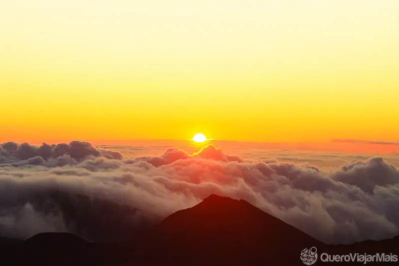

Parque Nacional do Haleakala (Maui)
Conhecer um vulcão no Hawaii foi uma das experiências mais incríveis que já pude vivenciar.
Além de possuir diversas praias, as ilhas havaianas, que pertencem aos Estados Unidos,
ainda contam com vulcões que realmente são espetaculares.
A ilha de Maui é a casa do Parque Nacional de Haleakala, vulcão com 3.055 metros de altura,
sendo um dos principais pontos turísticos da ilha.
Golfinhos em Kealakekua (Big Island)

A baía conhecida como Kealakekua Bay é um dos principais locais para nadar com golfinhos em todo
o Hawaii. Localizada próxima a cidade de Kona, a baía é bastante conhecida por ser ponto de
encontro de golfinhos nas primeiras horas da manhã ou no pôr do sol, momento ideal para descansarem nas
águas tranquilas próximo à costa de Big Island.
Kilauea, o maior vulcão ativo em Big Island

Visitar o vulcão Kilauea é uma experiência que deveria estar presente no currículo de todos os viajantes.
Conhecer o vulcão de Big Island é algo que realmente vale a pena, além de ser uma atividade que não irá
pesar em seu orçamento de viagem.